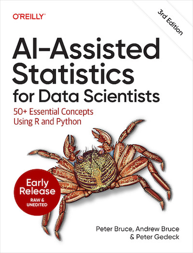
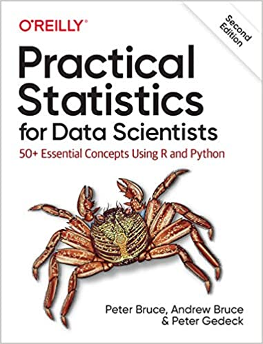
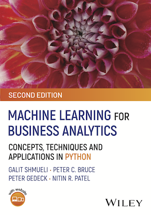
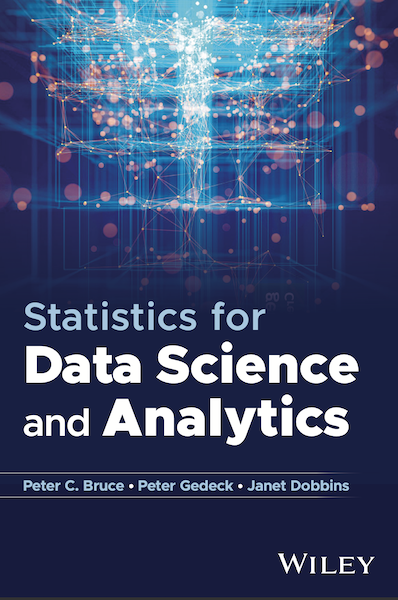
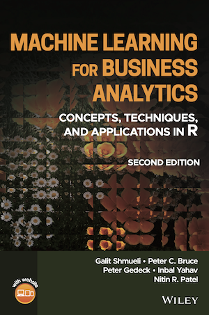
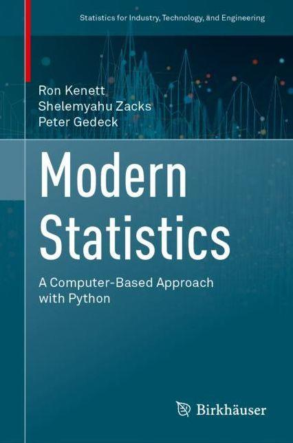
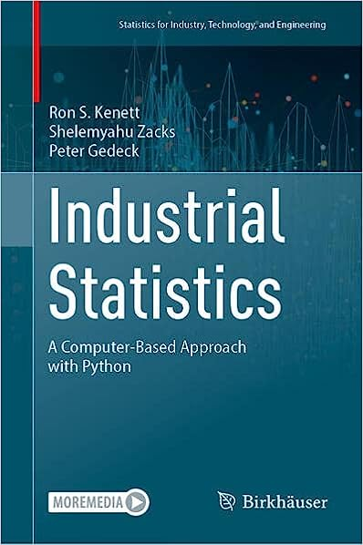

Books








|
|
AI-Assisted Statistics for Data Scientists:50+ Essential Concepts Using R and Pythonby Peter C. Bruce, Andrew Bruce, and Peter Gedeck
Code for AI-Assisted Statistics for Data Scientists is here. |
||
Practical Statistics for Data Scientists:50+ Essential Concepts Using R and Pythonby Peter C. Bruce, Andrew Bruce, and Peter Gedeck
Code for Practial Statistics for Data Scientists is here. Translations into several other languages are available. |
||
Machine Learning for Business AnalyticsConcepts, Techniques and Applications in Pythonby Galit Shmueli, Peter C. Bruce, Peter Gedeck, and Nitin R. Patel
|
||
Statistics for Data Science and Analyticsby Peter C. Bruce, Peter Gedeck, Janet Dobbins
|
||
Data Mining for Business Analytics:Concepts, Techniques and Applications in Pythonby Galit Shmueli, Peter C. Bruce, Peter Gedeck, Inbal Yahav, Nitin R. Patel
|
|
|
Machine Learning for Business AnalyticsConcepts, Techniques, and Applications in Rby Galit Shmueli, Peter C. Bruce, Peter Gedeck, Inbal Yahav, Nitin R. Patel
Code for MLBA is here. |
||
Modern Statistics: A Computer Based Approach with Pythonby Ron Kenett, Shelemyahu Zacks, Peter Gedeck
Code and solutions for Modern Statistics are here. |
||
Industrial Statistics: A Computer Based Approach with Pythonby Ron Kenett, Shelemyahu Zacks, Peter Gedeck
Code and solutions for Industrial Statistics are here. |
||